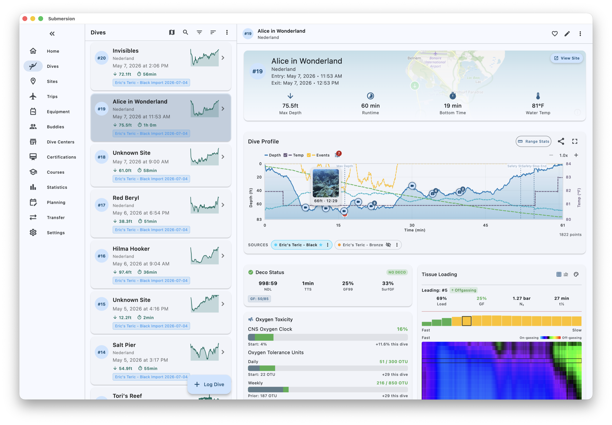

6 m · From your computer
Start with what your computer recorded.
Pair over Bluetooth or plug in over USB, download, review what came in, done. After the first time, only new dives come across.

350+ models
Submersion bundles libdivecomputer. That gives it the 350+ models supported by libdivecomputer, from 37 manufacturers, over Bluetooth LE and USB. The project has confirmed the Shearwater Teric and the Aqualung i300C and i330R and is looking for testers for the rest. Bluetooth only on iOS.
Incremental downloads
Submersion remembers the last dive it took from each computer and fetches only what is new.
Duplicate review
A download that looks like a dive you already have is shown next to it. Skip it, import it as a new dive, replace the earlier source, or keep both computers' readings on one dive.
Two computers, one dive
Wear a backup? Both downloads attach to the same dive, and you can put their profiles on one chart.
Already have a logbook somewhere else?
Import files
Subsurface, MacDive, Shearwater Cloud, Garmin FIT, DAN DL7, Ratio and UDDF files import directly. CSV comes with presets for MySSI, Diving Log, DiveMate, Garmin Connect and Shearwater Cloud, or map the columns yourself.
Apple Health
Underwater workouts recorded by an Apple Watch import on iOS with depth, temperature and heart rate.
Paper logbooks
Scan the pages and Submersion reads the entries with OCR so you can check them and import them.
Open formats
Everything you import can leave again as UDDF 3.2, CSV, Excel or PDF.
— 20 m · The Reef
A closer look.
Clean on the surface, thorough underneath — like any good dive plan.



— 30 m · The Wall
Built for divers who read the fine print.
Under the calm interface: a complete decompression toolset that takes your diving as seriously as you do.
Dive documentation
Complete records — conditions, timestamps, temperatures. Trips, tags, favorites, and notes. Multi-cylinder configurations with gas mixes from air to trimix.
Site management
GPS capture with reverse geocoding. Depth ranges, difficulty ratings, hazard documentation. An interactive map of everywhere you've been.
Computer integration
Direct USB and Bluetooth downloads. Incremental sync with duplicate detection. Support for 300+ models via libdivecomputer.
Planning & analysis
Complete multi-gas dive planning. Real-time NDL, ceiling, TTS, CNS and OTU. Gradient factors you set yourself.
— 38 m · Buddy Check
Buddy check.
Found a bug? Have an idea? Surface it — open an issue on GitHub. For everything else: support@submersion.app.
— 40 m · The Abyss
Ready to submerse yourself?
Free and open source on every platform. No account. No subscription. Just your logbook, the way it should be.
DownloadAll platforms